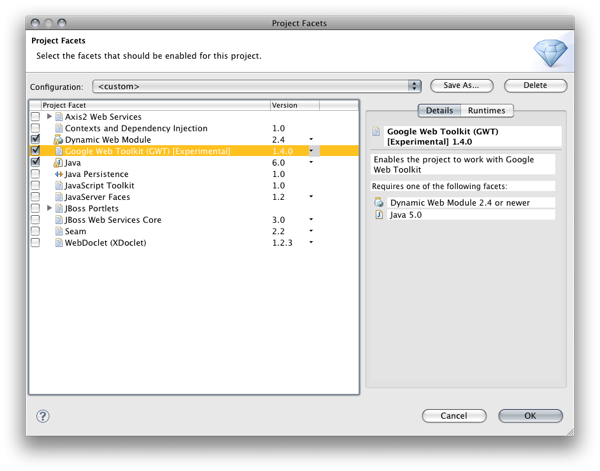
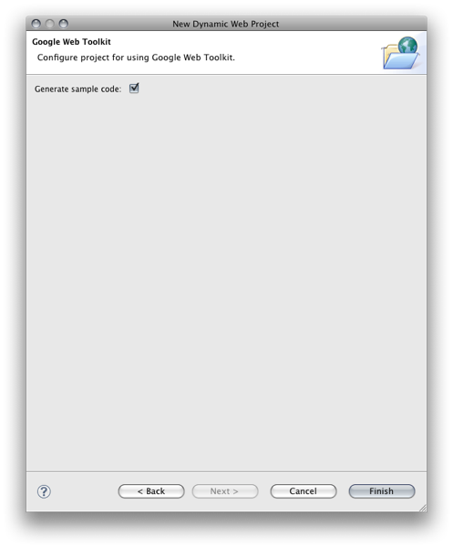

|
The GWT plugins for Eclipse provide their own wizards and user interaction patterns.
They do not integrate well into the existing Eclipse components for web projects. Our experimental plugin
delivers a facet for dynamic web projects and allows you to choose a GWT facet when creating a dynamic web projects.

A further wizard page allows you to get the GWT sample the Google plugins deliver.

Our integration allows you to create GWT projects the way you are used to create dynamic web projects in Eclipse.
It offers GWT capabilities to all frameworks that conform to the Dynamic Web Project infrastructure
in Eclipse.
Deployment to the JBoss application server (or any other JEE application server) works just out of the box.
Related Jira
|